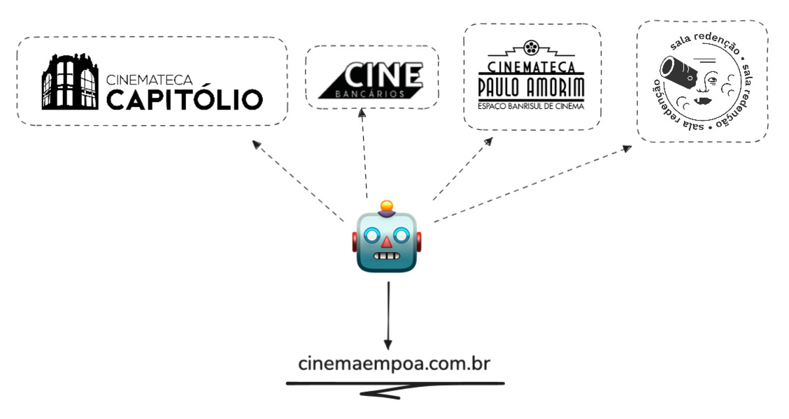
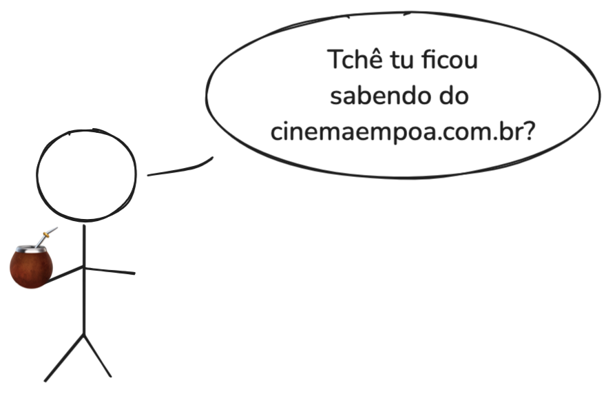
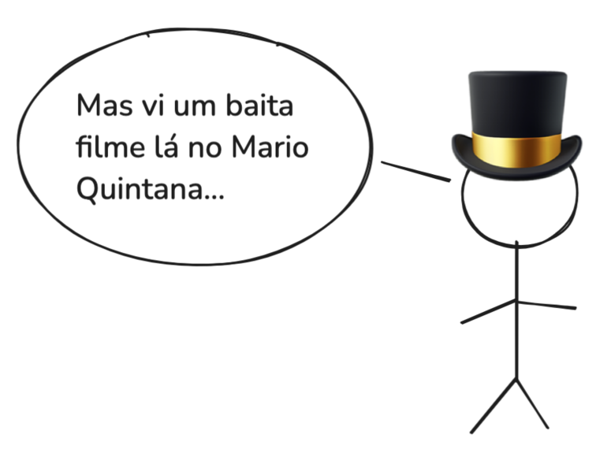

(Re)lançando o cinemaempoa
O https://cinemaempoa.com.br é um portal agregador dos filmes que passam nas casas de cinema de Porto Alegre.
Por que esse projeto?
PoA tem vários cinemas comerciais (os cinemas de shopping), mas o que faz a cidade ser única são suas salas culturais, dedicadas a filmes diferentes: nem sempre são lançamentos, às vezes não passam nos ciclos comerciais, podem possuir maior teor experimental, podem ter marcado a história do cinema, podem ter registrado a história de um país.
Esses filmes têm um teor cultural que confunde, educa e mistura as percepções de diferentes gerações com aquilo que foi produzido, trazendo a reflexão da história, mas também com aquilo que está em plena produção, através de filmes menores aos quais o público não teria acesso, não fosse o trabalho destas salas.
E o acesso a tudo isso é feito de forma democrática, parecida com a dos cinemas de rua, com ingressos a preços acessíveis e um constante convite ao público para conhecer as instalações, usando estratégias como eventos de entrada franca, mostras dedicadas ao público infantil, e exibição repetida em diferentes turnos (como tarde e noite).
O cinemaempoa é uma homenagem a estas iniciativas, feita por quem chegou na capital e teve uma overdose de cultura (literalmente indo parar no capitólio bem numa sessão de Beijo Ardente - Overdose), e através dessas salas pôde aprender mais sobre filmes e a ampla produção cultural que acontece na cidade.
Qual a proposta do projeto
A proposta central do projeto é simples: registrar em um único local a programação de qualquer cinema em Porto Alegre que se encaixe na descrição acima.
Atualmente, são quatro cinemas:

Mas não basta registrar. Para manter o espírito das salas homenageadas, essa informação precisa ser aberta, de fácil acesso, acessível e respeitar a privacidade dos usuários.
-
Aberta: a visualização das programações não deve exigir nenhum tipo de cadastro, nem restringir acesso a informação baseada em registro ou cadastro dos usuários.
Isso é especialmente importante se considerarmos que hoje em dia a principal forma de divulgação dessas salas é através das redes sociais, controladas por empresas com fins lucrativos, passíveis de bloquear ou filtrar informação baseado em aspectos geográficos ou sociais dos usuários.
-
Fácil acesso significa que o site deve ser desenvolvido com foco em facilidade de uso, com informações e instruções claras e sempre fornecendo a fonte das informações mostradas. Facilidade também significa reduzir a quantidade de dados trafegados, permitindo o acesso de usuários com redes lentas, dados limitados ou dispositivos com baixa capacidade de processamento.
-
Acessível significa utilizar tecnologias que facilitem ou promovam o acesso de usuários com deficiências ou limitações.
-
Respeitar a privacidade significa coletar o mínimo de dados de utilização, evitando qualquer forma de tracking ou fingerprinting que possa se mostrar danoso à privacidade dos usuários.
Qual o escopo do projeto
O projeto é desenvolvido de forma colaborativa. Isso significa que qualquer usuário pode sugerir alterações ou novas funcionalidades, e qualquer desenvolvedor pode contribuir com as implementações.
Para evitar que o projeto perca o seu propósito, existem três frentes de desenvolvimento principais:
-
Automação da coleta dos dados
Quanto menos trabalho humano for necessário nas etapas de coleta e tratamento dos dados, mais resiliente e duradouro o projeto se torna. Essa frente foca em tecnicas de raspagem, tratamento e validação de dados, assim como automação de processos.
-
Desenvolvimento do portal
Melhorar a usabilidade, acessibilidade e facilidade de acesso ao site através da otimização para dispositivos mobile, boas práticas de design, melhor indexação em plataformas de busca e implementação de novas funcionalidades que permitam acesso dos usuários aos dados coletados pelo projeto.
-
Análise dos dados
O conjunto de dados coletados nos permite análises valiosas sobre o ecossistema das salas de cinema da cidade. Informações como gêneros cinematográficos, diretores, origem e ano dos filmes podem ser utilizadas em estudos que enriquecem nosso conhecimento sobre os temas e tópicos dos filmes exibidos.
Como participar


Ajude no desenvolvimento! Seu trabalho vai facilitar o acesso à cultura de muita gente.
As instruções pra desenvolvimento estão no repositório do github.
Você pode ver a galera que já ajudou no projeto clicando neste link.
Finalizando
Por fim, agradeço o tempo dedicado pra leitura desse manifesto. Eu acredito que o projeto tem potencial :).
O Relançamento é porque esse projeto já teve dois inícios: a primeira iteração foi um script que eu rodava na minha máquina quando queria me organizar pra ir no cinema, e na segunda ele se tornou o portal, mas acabou tendo o desenvolvimento pausado por causa das enchentes de 2024 no Rio Grande do Sul.
Mas, ei, talvez a terceira vez seja a da sorte? 🍀
ps. tem uma versão em slides desse post neste link, pra caso eu crie coragem de apresentar isso em algum lugar.